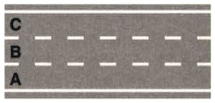
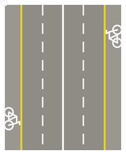
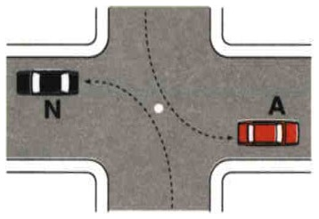
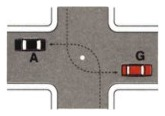
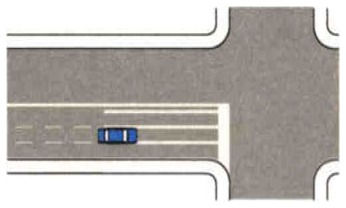
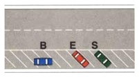

The map for this topic
This topic gathers eight subjects, and they teach one skill, which is moving through traffic without surprising anyone. The sections follow the order of a journey: where you belong on the road (position, parallel lines), the check before every maneuver (mirrors and blind spots), the maneuvers themselves (lane changes, turns, joining the flow, U-turns), who goes first at intersections, and the special situations. One thread runs through all of it: signal in good time, check before you move, and never become a danger or an obstruction.
Where you belong on the road
Your position on the road
Italy is right-hand traffic. You drive on the right side of the road, and cars are left-hand drive, meaning the driver sits on the left. This is the same as the US and continental Europe, and the opposite of the UK and Ireland. Everything below follows from this. You keep right, and you pass on the left.
- Drive on the right, close to the right edge.
- Motorless vehicles and led animals must also keep as far right as possible.
- On a multi-lane carriageway (carreggiata), use the rightmost free lane.
- You cross the broken lane line only to change lane or to pass. Otherwise you travel within your lane, even when the road is clear, and above all in a curve. Read the verb in a statement about lanes and lines: sorpassare is a moment, while marciare and circolare mean traveling along, and traveling along on the line, beyond it, or in the left lane is never allowed.
- The left lane is only for passing.
- On a three-lane two-way road, the center lane is for passing only, never for normal driving.
- When meeting oncoming vehicles on a narrow two-way road, move as close as possible to the right edge. This includes the uphill side of a crest (dosso).
- The "keep right" rule has a cycling exception. On bike lanes (corsia ciclabile) cyclists ride in the outermost part.
- In bike zones and urban bike streets cyclists may take any position on the carriageway. Expect bikes away from the right margin there.

- On a three-lane two-way road like this one (A is your lane, B is the center lane, and C is oncoming), lane B is only for passing, never for normal driving.
- On a road with two carriageways the left carriageway is not an overtaking carriageway. Each carriageway carries its own direction.
- On a road with separate carriageways you normally drive on the right-hand carriageway for your direction of travel.
- With three separate carriageways you normally use the right one or the central one. The central carriageway is usually two-way and the outer ones one-way.
- On a two-lane two-way road, meeting oncoming traffic, including on the uphill side of a crest, means hugging the right edge.
Driving in parallel lines
Driving in parallel lines (file parallele), meaning lines of vehicles side by side, is allowed in heavy traffic on roads with at least two lanes per direction, and on the approach to intersections controlled by lights or an officer. Driving in parallel lines is also allowed when a traffic officer authorizes it.
- Driving in parallel lines is permitted, never mandatory.
- Motorcycles may not thread between the lines. Approaching an intersection, a two-wheeler queues behind the vehicles already waiting and moves off in turn.
- Driving in parallel lines can also happen on a single-carriageway road. What matters is the lanes, not the carriageways.
- Driving in parallel lines is never allowed on a two-lane two-way road, nor on a three-lane one.
- "Heavy traffic" means the vehicles fill the whole half of the carriageway and move at the pace of those ahead. In heavy traffic you keep your speed as uniform as possible with the flow in your lane.
- In the lines you may leave the right edge but must stay in your chosen lane. You change lane only to reach the turning lane for a turn or to stop at the edge.
- You keep no turn signal on while simply holding the left lane.
- Bus lanes and bike paths are off limits to the lines.
- Passing on the right is not allowed in the lines.
- Non-motorized vehicles and mopeds are excluded from the lines altogether.

- Two-wheelers in heavy traffic. The road in the figure has two lanes per direction, so driving in parallel lines is allowed, but not for everyone. The bicycle lanes along the edges, marked off by the yellow line, are for bicycles only. Mopeds and motorcycles may not use them at any speed, not at walking pace, not with the traffic at a standstill.
- Mopeds stay near the right edge and do not take the left lane. The parallel lines are for cars and motorcycles, not for them.
Before every maneuver: mirrors and blind spots
- Adjust mirrors with the vehicle stationary, after setting the seat.
- The center mirror should show the whole rear window. The center mirror sits within the driver's field of vision, so a glance reaches it without turning the head.
- The center mirror is built to distort the distance of the vehicles behind you as little as possible.
- The center mirror has an anti-glare setting for night. It dims lights from behind, and it is usable on the autostrada too.
- The left door mirror mostly shows the road alongside you. Its right third should catch the tail of your own vehicle.
- Together, the mirrors extend the driver's view to the rear and the sides and so contribute to a panoramic picture of the road. Every driver uses all of them, the right door mirror included, whatever their experience.
- Check the mirror frequently, not once, and check it for every vehicle coming up behind, motorcyclists and cyclists included. A two-wheeler is narrow, quick, and easily missed.
- A vehicle built to give an adequate field of vision does not excuse a hurried look. Scan the area ahead of you and around you carefully before moving off.
- The field of vision can be cut by a headrest or by parts of the bodywork, the interior pillars above all, and that is where a cyclist or a motorcyclist disappears.
- The left door mirror distorts the distance and speed of approaching vehicles.
- The left door mirror has a wide blind spot, so always add a direct glance before passing, changing lane left, or joining traffic. Blind spots remain even with perfect adjustment.
- Before any turn, check the mirrors for vehicles coming up behind you. Before a left turn in particular, use the left door mirror, since the turn takes you across the path of anyone already passing you.
- The mirror check continues through a pass, since it is what lets you complete the maneuver safely.
- The mirror check applies everywhere, in town as much as outside it.
- Mirrors are mandatory equipment. You may not drive without them, sensors or not.
The maneuvers
Changing lane and changing direction
- Before any lane change, confirm the target lane is clear ahead and behind, watch the blind spot, and do not obstruct or endanger anyone already there.
- The order is fixed: look in the mirrors first, then operate the turn signal, then move. This holds for every driver, whatever the performance of the vehicle.
- Changing lane to pass calls for the signal and a clear lane, not for a reduction in speed.
- Change lane only where the dividing line is broken.
- Signal in advance before a lane change. Signaling is never optional, even on an empty road. The lane change is signaled with the turn signal, not the horn.
- For any change of direction, operate the turn signal early.
- Right turn. Keep as close as possible to the right edge.
- Signal the right turn in advance.
- Slow down as you approach the turn.
- The right turn, like every maneuver, is made without creating danger or obstruction to others.
- While turning, yield to pedestrians crossing the road you are entering, even when your light is green.
- Left turn. Move toward the center of the carriageway. At the junction, leave its center on your right and do not cut the corner.
- Where your half of the carriageway has several lanes, move in good time into the leftmost one to turn left.
- After a left turn, enter the new road on its right-hand side, never against its traffic, which Italian calls prendere contromano.
- When turning left, yield to vehicles from the right and to oncoming traffic. You stop only if a vehicle is actually coming, and with the road clear you complete the turn without halting.
- On a one-way road, keep to the left edge to turn left.
- Never cross a solid center line to set up a left turn. Move up close to the center line on your own side and turn from there. Where the line stays continuous you may not turn left at all, and where a left turn is allowed the line is broken or interrupted.


- The rule (left figure). Picture a point at the center of the junction. Each car moves up to the center line and turns in front of that point, so the point stays on its right and the car uses the left half of the junction. Two cars turning left from opposite directions pass each other face to face, each in its own half, and their paths never cross.
- The exception (right figure). Here each car drives past the center point and turns behind it, using the right half of the junction, and the two cars pass behind each other. This is the path around a roundabout or a central island, and it is taken only where a sign or the island requires it. It is never the normal way to turn left.
The wrong preselection lane

- If you realize too late that you are in the wrong preselection lane, go where your lane goes. Follow the arrows, yield as required, and sort the route out afterward.
- In the wrong preselection lane, do not change lane, brake sharply, stop, reverse, put on the hazard lights, wait at the light to cut across, or get out to ask directions.
- Near junctions there is also no weaving, no sudden direction change, and no U-turn.
- Near an intersection you may not keep changing lane all the way up to the stop line. Choose your lane early and hold it.
Joining traffic, moving off, and stopping at the edge

- To enter the flow, allow for the position, distance, and direction of others, signal early, and yield to passing traffic. You make the maneuver only when it creates no danger or obstruction to other road users, and otherwise you wait.
- Reversing out of a space like vehicle S above means yielding to all vehicles from both sides and watching for pedestrians behind you. Before reversing out, make sure the road is clear, and carry out the maneuver slowly and with particular caution.
- When reversing out of a space, use the turn signal, not the hazard lights and not the horn, and do not rush "to free the space."
- Breaking the joining-the-flow rules also costs license points. The conduct violations of this topic are typically worth 2 points each.
- Before moving off, a motorcyclist must have the helmet fastened and the low beam on, and a car driver must wear the seatbelt unless exempt. This is done before the maneuver, not after.
- Before moving off, check the road is clear using mirrors plus a direct glance.
- Pulling over to stop at the right edge is an ordinary, permitted maneuver, on a one-way road as on any other. Like any maneuver, it must not create danger or obstruction for other road users. Signal it in advance with the turn signal, and signal it even when traffic is light. Do not use the hazard lights or flash the headlights for it.
- Before pulling over, take into account the position, distance, and direction of the other road users.
- When stopping at the right edge, avoid harsh braking and watch for approaching two-wheelers.
U-turns and reversing
- A U-turn requires yielding to oncoming traffic and signaling throughout. The signal is the turn signal, kept on for the whole maneuver, not the hazard lights.
- A U-turn must not create danger or obstruction for the other road users.
- Give up a U-turn in heavy traffic or poor visibility. A broken center line does not override poor visibility.
- U-turns are forbidden near curves, crests, intersections, wherever visibility is poor, in tunnels, on one-way roads, across a solid center line, and always on the autostrada.
- U-turns are not banned merely because markings are missing, because the edge line is solid, or because you are outside of town. The edge line marks the side of the carriageway, and a U-turn never crosses it. The continuous line that forbids a U-turn is the center line, which may never be crossed.
- Neither the width of the road nor the number of maneuvers decides whether a U-turn is allowed. A narrow road may lawfully take more than one maneuver, back and forth, as long as it is safe.
- Reversing always means yielding to all and going slowly. Before starting to park in reverse, use the mirrors to check the road behind the vehicle, and keep checking throughout the maneuver.
The right of way at intersections
- The general rule is to yield to the right. If two vehicles arrive together, the one with a vehicle on its right yields. The width of the road plays no part.
- Approaching an intersection, slow down and be ready to apply the right-of-way rules, since arriving faster is no way to claim the right to go first.
- When two vehicles arrive at the same time from different roads, both must reduce speed to avoid a collision.
- Toward a driver who passes first without having the right of way, be prudent and tolerant rather than insist on your priority.
- Trams and trains on rails have priority unless signed otherwise.
- Yield to bicycles traveling in a bike lane marked by a broken line.
- Take particular care with pedestrians and cyclists in pedestrian areas, urban bike streets, and bike zones.
- Enter an intersection only if you can clear it. When you cannot tell at once who has the right of way, slow down and proceed with caution and care, whichever direction you are taking.
- Approaching an intersection, move into the correct lane and signal in time. Approach every intersection with the greatest caution to avoid accidents.
- Even to turn, and even in town, you stay within one lane and never drive straddling the lane markings.
- Near intersections, do no zigzagging, no sudden direction change, and no U-turn.
- Outside towns, do not stop or park near an intersection.
- You must yield to everyone when joining the flow, reversing, making a U-turn, or leaving a driveway or private property. Watch for pedestrians, especially when reversing.
- When leaving a private property, proceed slowly, especially in reverse.
- Roundabouts (rotatoria). The ROTATORIA sign alone gives the ring no priority at all. With nothing else signed, the ordinary yield-to-the-right rule keeps working.
- Before entering a roundabout, reduce speed, use maximum caution, and watch what the other users are doing.
- Since entering vehicles come from the right of those circulating, the unsigned default is that the ring yields to entering traffic.
- What flips this to the arrangement you know from home is the YIELD sign posted at the entries, and nearly every real roundabout has one. With a sign at the entry, the ring has priority. You yield to vehicles from your left, stopping only if needed at the shark-teeth line.
- STOP always means a full halt, line or no line.
- Inside the ring there is no reversing and no passing on either side.
- At a flashing yellow light, proceed with caution under the normal priority rules. It does not mean yield to everyone.
Special situations
- Processions, funerals, and military convoys are all treated alike: any organized column occupying the road, whether a funeral cortege, a religious procession, a parade or demonstration, or a marching military column. Stop on the right and wait for the road to clear, or turn into a side road if you can do so correctly.
- Do not cut through a procession or sound the horn. In town, when you meet a procession, do not reverse or make a U-turn if that would obstruct traffic.
- When a pedestrian crossing away from the crosswalk does not yield to you, slow down and stop if needed. You do not press on because you "have the right of way."
- With a pedestrian off the crosswalk, a brief horn tap is allowed in immediate danger. Flashing the high beams at night is not a substitute for slowing down.
- Oncoming high beams at night. Switch to low beam, look away from the glare, slow down, and avoid abrupt maneuvers.
- The mirror's anti-glare setting helps against lights from behind, not oncoming ones.
- Tram rails. You may drive on tram rails laid flush with the road if you do not hinder the tram.
- Where a double tram track runs inside your half, you may drive to its left as long as you stay in your half.
- City gates. Through a city gate with several openings, take the freest opening on the right.
- Safety islands. At a tram or bus stop with a safety island to the right of the road's axis, you may pass on either side of the island, within your half and without getting in the passengers' way.
- A slow vehicle at a green light. Be patient, and help the driver if you can do so safely.
- A vehicle that is slow to move off at the green must not be overtaken with dangerous maneuvers.
- In town the horn may not be used to hurry a slow vehicle. In town the horn is not used to alert the drivers behind either.
- A truck-and-trailer combination (autotreno) turning right in a tight space swings out to the left first and slows sharply.
- Keep well back from a right-turning autotreno, since it may even need to reverse. Do not try to pass it, even once it signals.
- A steep, narrow road. Where two vehicles cannot pass each other, the one going downhill generally stops and reverses.
- On a steep, narrow road, whichever driver is nearer a passing place (piazzola) pulls in and lets the other by.
- Police illuminated messages. The roof display is an officer's command in written form. It binds you exactly as a personal order would, and ignoring it is a serious offense.
- Read a police message as addressed to a specific vehicle when the patrol positions itself accordingly. "ALT POLIZIA" shown after the patrol overtakes you and pulls ahead means only you must stop. Everyone else carries on.
- "ACCOSTARE" means pull over and stop.
- "RALLENTARE" means all vehicles slow down, not only trucks.
- "INCIDENTE" means accident ahead, slow down. It does not mark a "high-risk zone."
Being a danger or obstruction, and your load
- Do not drive too slowly without reason, race, zigzag, or park on tram rails.
- Observing the traffic rules is not enough to avoid being a danger or an obstruction: you must also follow the precautions that common sense dictates. The fundamental rules must be joined to a strong civic sense, which means consideration for everyone sharing the road.
- Arrange any load so it does not reduce your visibility or freedom of movement and cannot fall.
- The load must stay within the capacity shown on the registration document. There is no 10% tolerance, neither on the payload nor on the 4 m (4.4 yd) height limit.
- On a motorcycle the load must not project more than 50 cm (20 in) sideways. Animals ride only in a proper cage.
- On a car the load must not project more than 30 cm (12 in) beyond the position lights sideways.
- The load must not project more than three-tenths of the vehicle's length at the rear, and never at the front.
- A rear overhang is marked with the red-and-white striped reflective panel, day and night, not a red cloth, not yellow-and-red.
Summary of key points
- Keep right. The left lane, and the center of a 3-lane two-way road, is for passing only. Roads with two carriageways have no "overtaking carriageway."
- Signal early and check ahead, behind, and the blind spot before any lane change, always, even on an empty road. The dividing line must be broken.
- On a right turn, hug the right edge. On a left turn, go to the center and leave the junction's center on your right, yielding to oncoming and right-hand traffic.
- In the wrong preselection lane, go where the lane goes: no lane change, no stopping, no reversing.
- Yield to the right by default. Rails have priority. Yield to bikes in a bike lane marked by a broken line. Yield to all when joining, reversing, doing a U-turn, or leaving a driveway. Roundabouts follow the signs. Flashing yellow means caution plus the normal rules.
- No U-turns near curves, crests, intersections, in poor visibility, or ever on the autostrada.
- In special cases, stop for processions, switch to low beam against oncoming high beams, stay back from a right-turning autotreno, yield downhill on a steep narrow road, and obey police display messages.
- The load stays within capacity with no 10% tolerance, may overhang the rear by at most three-tenths of the vehicle's length, marked with the red-and-white panel, and may project sideways by at most 50 cm on a motorcycle.
- Use mirrors plus a direct glance, adjusted stationary after the seat. The left mirror distorts distance and has a wide blind spot.